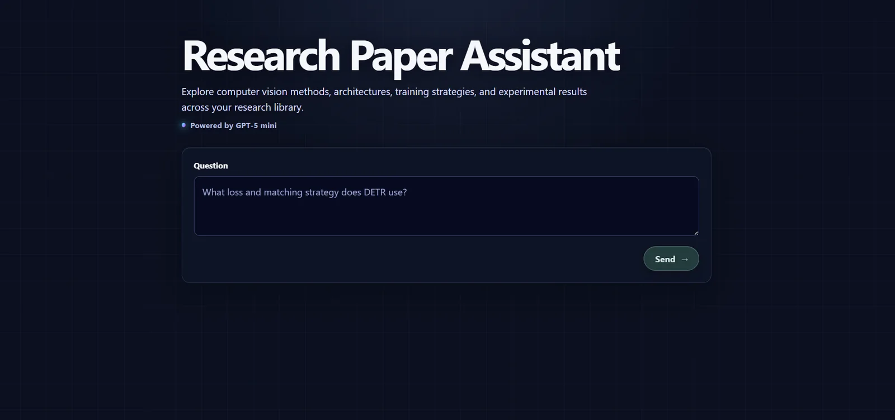

← All work
Research Paper Assistant
Ask a question about a set of computer-vision papers and get an answer based on passages from those papers, with citations to where each part came from.
- Role
- Developer
- Team
- Solo
- Status
- Runs locally
- Links
- Code ↗

Overview
- A local RAG assistant for computer-vision research papers. It processes a small collection of PDFs, finds the passages most relevant to a question, and asks an OpenAI model to answer using only those passages, with citations.
- It was built as a practical, understandable RAG pipeline rather than a production platform, with a simple FastAPI website for asking questions.
What I built
- PDF processing: extracting and cleaning the text, removing references and acknowledgments, and splitting it into chunks that follow paragraphs and sections.
- Search: embeddings stored in ChromaDB, combined with keyword search (BM25), then reranked before the best passages are sent to the model.
- Answers: a prompt that limits the model to the retrieved passages, and citations you can hover to see the source text.
- Automated tests for each stage, from PDF processing to the web endpoints.
Stack
- Python
- FastAPI
- OpenAI API
- RAG
- ChromaDB
- BM25